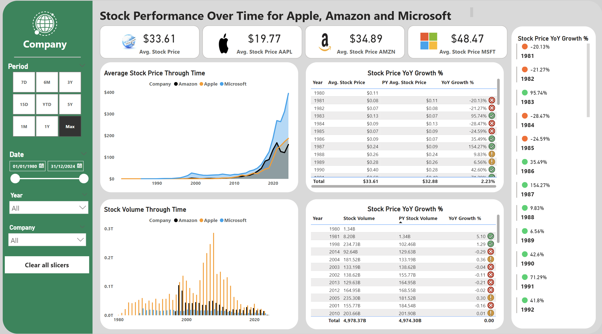
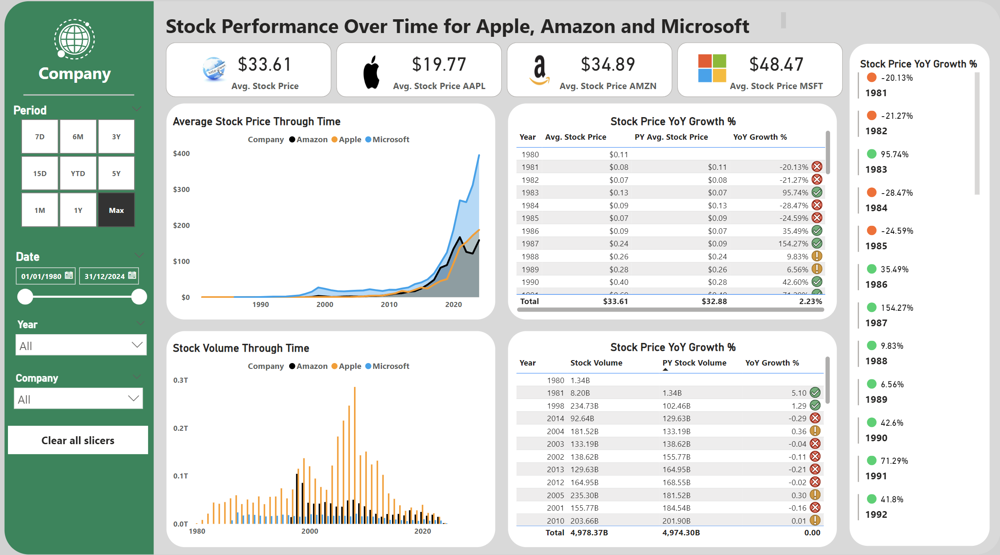
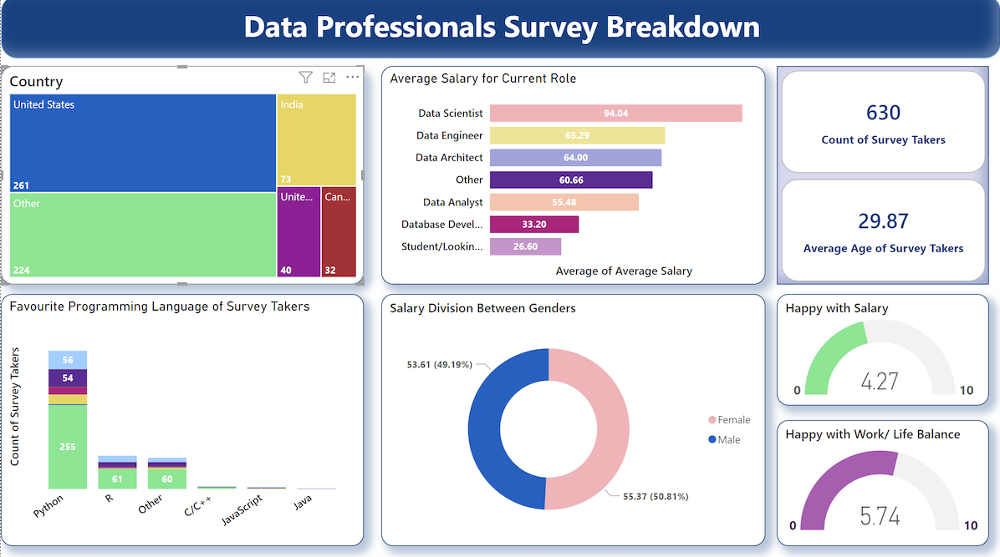
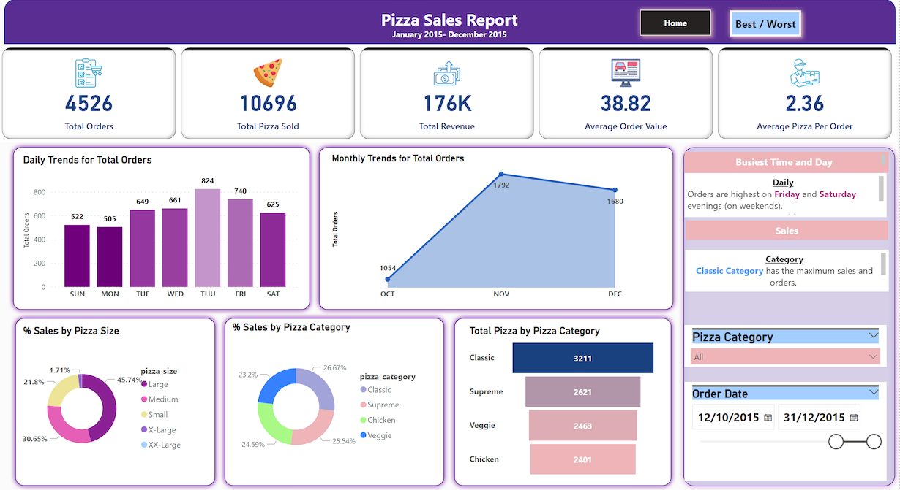
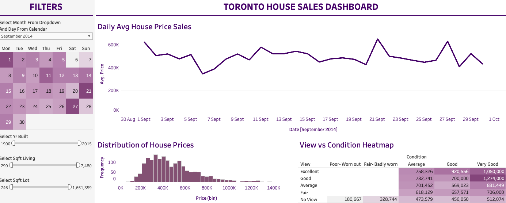
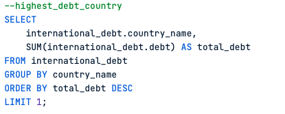
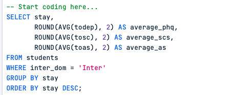

Armed with Power BI, SQL, Python, and R, I dive deep into complex datasets, unveiling hidden gems and solving puzzles along the way. Join me as we explore my projects—each one a thrilling journey where data meets innovation, and insights lead to impact. Let's embark on this exhilarating ride together! 📊💡
 

In this PowerBI project I downloaded historical dataset from Yahoo Finance website for three tech companies— Apple, Amazon and Microsoft! I turned the raw, faulty data to valuable insights using various filters, data type conversions, measures and custom columns. 💡

In my Power BI project, I dissected survey data, exploring salaries, work locations, and job satisfaction. With SQL queries, I ensured data accuracy. Using Power BI's dynamic interface, I visualized insights with captivating tree maps and gauges. Highlights included uncovering gender-based earning gaps. Through mastering Power BI's features, I transformed raw data into actionable insights, creating comprehensive reports on earning disparities and regional influences. This project was about uncovering meaningful insights and telling compelling stories with data. 🌟💡

🍕 Welcome to the Pizza Sales Analysis project! 📊🔍
I used SQL and Power BI to slice and dice sales data from a popular pizzeria chain.
Learning Methods: I mastered SQL queries for data extraction and cleaning, tackling concepts like joins and aggregations through hands-on exercises.
Data Cleaning: SQL helped me prep our dataset for analysis, handling missing values and standardizing formats.
Power BI Styling Features: Power BI jazzed up my reports with custom colors and sleek layouts.
Insights and Analysis: My dashboards served up insights on sales trends, popular pizza picks, and revenue distribution.
Conclusion: This project blended SQL prowess with Power BI magic to optimize sales strategies. 🚀🍕

Here I worked on a guided project to use publically available data to gain insights on house sales in Toronto. I gained correalation on all sorts of factors from average house price, distribution of bedroom, distribution of bathrooms and more!

For the SQL project analyzing international debt statistics, I embarked on a data adventure across the globe 🌍💰. Using SQL queries, I navigated through vast datasets to uncover insights on global debt trends, creditor countries, and repayment terms. Each query revealed crucial information, from debt-to-GDP ratios to debt service indicators, painting a vivid picture of global financial health. Through SQL sorcery, I transformed raw data into actionable insights, shedding light on the challenges and opportunities facing countries worldwide. 🚀🔍

In the SQL project analyzing student's mental health, I delved into datasets capturing various facets of student well-being 🧠💻. Using SQL queries, I uncovered insights into factors impacting mental well-being, such as academic stressors and social support networks. Through data analysis, I identified patterns and trends to support initiatives aimed at promoting student mental health within educational institutions. 📊🔍

All of my Tableau Projects in one place!
PowerBI | SQL | Python | Tableau | Google Data Analytics |Machine Learning
More details into my coursera achievements!
-->